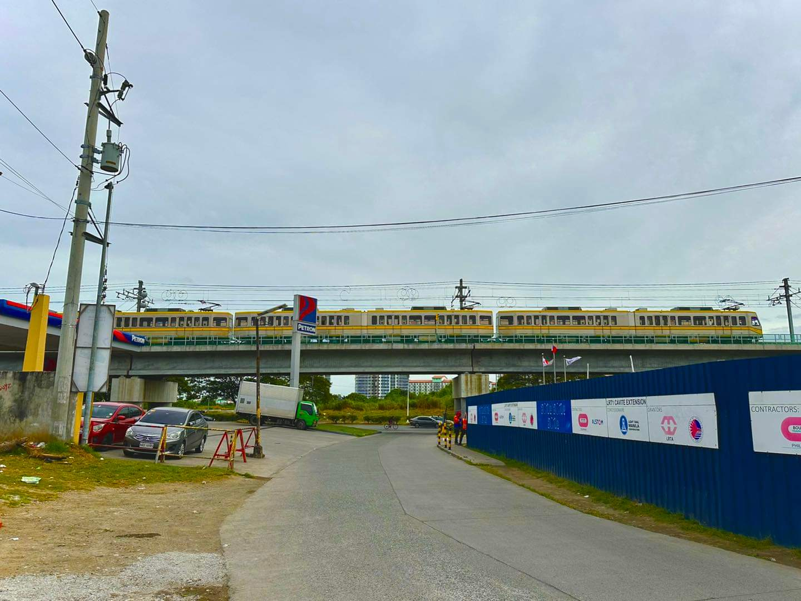
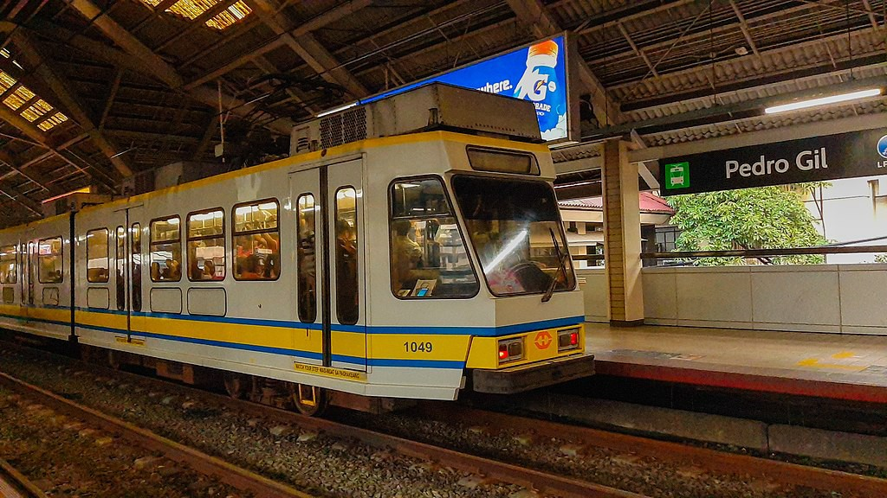
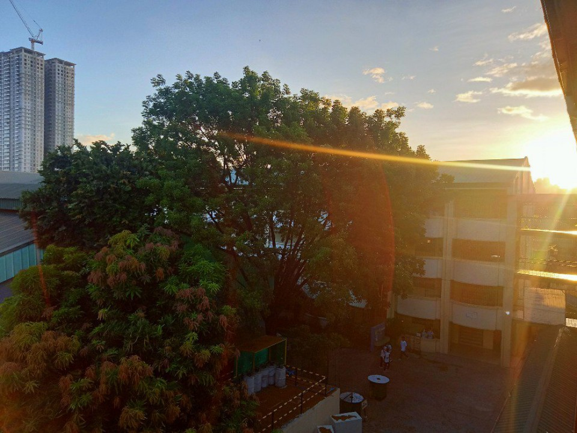

Welcome to our website!
Thank you so much for making this personal project go viral like crazy! If you liked this project and want it to be accessible in the future as you want LRT-1 trains also the trainspotting and rides, Pasay City West High School, and web-based apps, please consider supporting below:
Facebook
YouTube
This simple web to explore something new at LRT-1 to enjoy for trainspotting, rides and, explore articles in this site.
This project was inspired by the
Light Rail Manila Corporation
YouTube
This simple web to explore something new at LRT-1 to enjoy for trainspotting, rides and, explore articles in this site.
This project was inspired by the
Light Rail Manila Corporation
Latest from Justin LRT
Happy new year!
Happy New Year, everyone! Thank you for your support throughout 2023. We've created countless memories together that we can cherish. We worked tirelessly on content throughout the entire year, aiming for more views.As we enter 2024, we hope it will surpass the achievements and experiences of 2023.
Latest from LRT-1
Trial run for Cavite Extension Project

Photo by Las Piñas Born & Raised
More information here.
NEW! Web Apps
Are you very excited to see this for very first time? You can explore and use our apps to enjoy your everyday life.Click here to view our Web Apps.
LRT-1

LRT-1 is owned by Light Rail Transit Authority and the operator and maintenance by Light Rail Manila Corporation. LRT-1 started operations in December 1, 1984 and make this a first LRT system in Southeast Asia. With the length of 19.65 kilometers and 20 stations, LRT-1 is a great service ever because the air conditioning is very cool, the speed is fast, and enjoyable view outside. So do you want ride LRT-1?
In this page, you want to see about LRT-1 and also the trainspotting and rides by Justin. This includes updates for up-to-date information about LRT-1.
Please click the link below for more articles about LRT-1:
- LRT-1 updates
- LRT-1 fare guide
- LRT-1 free ride
- LRT-1 trainspotting
- LRT-1 ride
- LRT and MRT songs
- LRT and MRT system map
- Justin sent a letter to LRT-1 management
- LRT Elections and Officers
More and full information about LRT-1 here.
- LRT-1 navigation page - shortcut for information of rolling stocks, stations, and operators
If you want to view your LRT-1 travel level, please click here.
Pasay City West High School

This section was I included here because to make visitors better how beautiful the largest public school in Pasay City it is and what their contents and features around the school.
Click here to see about the school.
Photographies
 |
|
 |
 |
 |
 |
Some of his photos captured somewhere
Justin LRT took more than 1000 photos per year everywhere. This is one of main hobbies other than of trainspotting and train rides to share the photos in the public to make people see what the place look like now.
Would you like to see his photographies? Click here.
Would you like to see his photographies? Click here.
About me
Hello there! My name is Justin and I am a Filipino student of Pasay City West High School, a photographer, song composer of LRT and MRT and rail enthusiast. I'm always ride LRT-1 because I'm enjoying ride LRT of cool air conditioning, fast speeds and safe.This is my first time dabbling with coding, and I used ChatGPT heavily to help me with this project. If you have any comments or if you want to contribute to this project, please do reach out!
Click here for more information about me.
If you liked this project and want it to be accessible in the future, please consider supporting me. Thank you!